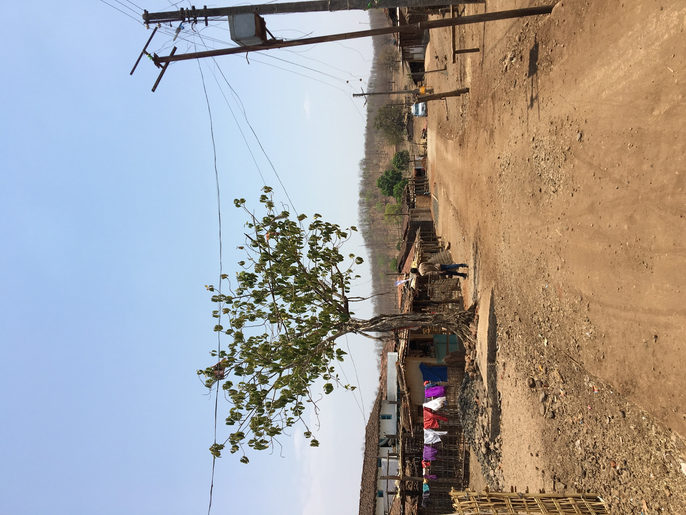

Pre-PhD
International Initiative for Impact Evaluation (3ie)
While at the 3ie, I served as an evaluation and learning research associate where I managed two large grant programmes:
1) Swashakt-Empowering Indian Women’s Collectives (USD 7.3 million): I led the drafting of the CfP, facilitated interviews with potential civil societies who could benefit from the grant, conducted inital fieldwork to vet and closely monitor development interventions of identified civil societies and managed all the grant applications. I co-authored the comprehensive Call for Proposals, establishing clear criteria that aligned with our strategic objectives. Through rigorous stakeholder engagement, I personally conducted evaluation interviews with over 30 civil society organizations, identifying those with the greatest potential for transformative impact.
Read more
My role extended beyond desk work - I conducted extensive field visits across multiple districts to validate the ground realities of shortlisted organizations. This hands-on due diligence involved observing ongoing interventions, interviewing beneficiaries, and assessing organizational capacity firsthand. I established monitoring frameworks to ensure accountability and impact measurement throughout the grant lifecycle. Managing the competitive application process, I oversaw the evaluation of 30+ proposals, coordinated with internal review committees, and provided strategic guidance to applicants. This comprehensive approach ensured that our grants supported the most effective and sustainable development initiatives in the region.2) Agricultural Innovation Evidence Program in Africa (USD 1 million): I helped close the Agricultural Innovations Evidence Program in Africa by facilitating knowledge and research sharing workshops in Rome, Italy and in Nairobi, Kenya, with research stakeholders including local communities, government officials, academics and civil societies.
Read more
I successfully concluded the Agricultural Innovations Evidence Program across Africa by orchestrating high-impact knowledge exchange forums that bridged continents and sectors. As the program’s closing lead, I designed and facilitated strategic workshops in both Rome and Nairobi, bringing together a diverse coalition of stakeholders - from grassroots community leaders to senior government officials, renowned academics to frontline civil society practitioners. These capstone events weren’t just meetings - they were carefully curated platforms for transformative dialogue where three years of groundbreaking research was distilled into actionable policy recommendations. In Rome, I coordinated with international donors and policy experts to ensure our findings would influence global agricultural development strategies. In Nairobi, I created spaces where local communities could directly present their experiences to decision-makers, ensuring that African voices remained central to the narrative. My approach emphasized interactive knowledge transfer, using innovative facilitation techniques to break down traditional hierarchies and foster genuine exchange. The result was a series of concrete commitments from key stakeholders and a robust dissemination strategy that continues to influence agricultural innovation policies across the continent.Vihara Innovation Network
While at the Vihara Innovation Network, I worked in the Gender and Health Vertical which is committed to understanding the complex interplay of gender, sociocultural, and environmental factors that shape health outcomes. We used social norms transformation, capacity building, financial and digital inclusion, and advancing livelihoods for women, to build healthy, resilient, and future-forward communities. I co-led two major ethnographic projects:
1) Nourishing Hard to Reach Communities: This was an Ethnography and Human Centered Design project to understand and address malnourishment among tribal populations of Nandurbar and Amravati.
Read more
Both of them are tribal districts in the western state of Maharashtra. We spent 5 immersive months in both these tribal districts. This “Nourishing Hard to Reach Communities” study is the foundational research for the Nutrition India Programme. The research team spent several weeks in locations across Nandurbar and Amravati, and conducted ethnographic and human centred design research, to build a rich first-hand understanding of the affected cultural groups, and the complex and multi-variate challenges of malnutrition therein. We were further focused on identifying social-cultural-behavioural barriers to providing adequate nutrition and to propose critical areas of intervention that would lead to positive gains. For this task, the research team engaged with a number of different community-based and adjacent stakeholders (including several pregnant women and their families, traditional and systems health functionaries, dais, doctors and health officials). We spent extensive periods observing community life and visually documenting material, home and food cultures, and came away with rich narratives and deep understandings around the complexity of malnutrition. We understood how communities think, behave and talk about food, nourishment, health, infections and illness; how they relate to traditional health providers and the public health system; which mix of behavioural, social, environmental and systemic factors inhibit good nutrition; what local cultures, practices and concepts can be leveraged to improve nutrition; and most importantly, the critical needs and opportunities exist that if addressed would lead to positive effects in nutrition for hard to reach children. Please read the full report here: https://reacheachchild.com/pdf/Tribal%20Ethnography-Amravati%20&%20Nandurbar-%20Nutrition%20India%20Programme.pdf2) Mapping social and environmental barriers to maternal-child health: This was an ethnography project to map and address how social and environmental barriers prevent young mothers, mothers in general and infants are able/unable to access health care in two states of Uttar Pradesh and Bihar.
Read more
Our team spent an immersive 4 months in two different districts of Bahraich in Uttar Pradesh and Darbhanga in Bihar. In these two diverse geographies, terrains and community attitudes, we understood that social and environmental barriers have prevented families from accessing institutional health care. Additionally, we unearthed several corrupt and practices by local health care staff which created a systemic problem in how communities perceive doctors and nurses. Our ethnography became more than research. It became evidence of a healthcare crisis hidden in plain sight, where social customs and environmental challenges were compounded by corruption so endemic it had become normal.Sehgal Foundation
While at Sehgal Foundation, I spent a substantial number of days in the rural parts of Rajasthan and Haryana. I worked on a multitude of projects concerning local governance, women’s collectives and addressing small-scale farmers’ well-being. A brief description of few selected projects:
1) Understanding women’s empowerment to develop a customized measurement index: We worked directly with women from over 40 villages, our interdisciplinary team conducted immersive ethnographic research to understand how rural women define and experience empowerment in their daily lives.
Read more
Through participatory workshops, large-scale surveys, in-depth interviews, and community dialogues, we mapped both visible and invisible dimensions of agency - from decision-making power within households to mobility patterns and access to resources. This 6-month project represented a critical shift from measuring empowerment through a universal lens to developing tools that capture the true complexity of women’s agency in rural India. What emerged challenged conventional empowerment frameworks. Women in Rajasthan defined empowerment through the lens of ‘izzat’ (honor) and family wellbeing, while Haryana’s women emphasized economic independence despite purdah restrictions. We discovered that seemingly small freedoms - like having a personal mobile phone or choosing when to visit the local market - held profound significance in these contexts. The research revealed hidden forms of agency: women’s informal savings groups that operated under the radar of male family members, subtle negotiation tactics used to influence household decisions, and creative workarounds to mobility restrictions. These nuanced expressions of empowerment were invisible to standard measurement tools.2) Understanding local governance: we created unprecedented spaces for democratic dialogue where village heads and citizens sat face-to-face to confront the barriers blocking effective local governance.
Read more
This innovative project deployed the Community Score Card methodology to transform typically hierarchical relationships into collaborative problem-solving sessions. Over six months, our team facilitated structured dialogues in 5 villages across both districts. These gatherings brought together diverse stakeholders - from marginalized women and landless laborers to village sarpanches and ward members - to collectively assess and score the performance of local governance systems. In Samastipur, discussions revealed systematic exclusion of marginalized communities from development schemes, while in Nuh, participants highlighted how traditional power structures undermined women’s participation in gram sabhas. The face-to-face format created accountability moments where officials had to respond directly to citizen concerns, often for the first time.3) Understanding agricultural innovations: In the arid fields of Nuh district, Haryana, where traditional farming practices meet modern pressures, our team conducted an in-depth study to understand the complex web of factors preventing agricultural innovation and gender equality in one of India’s most conservative farming regions.
Read more
Over eight months, we embedded ourselves in 5 farming communities, employing a mixed-methods approach that combined ethnographic observation, focus group discussions, and detailed household surveys across consenting farming families. Our research revealed a paradox: while farmers desperately needed innovative solutions to combat declining yields and water scarcity, deep-rooted social structures and economic constraints created formidable barriers to change. Our research uncovered that the most successful agricultural innovations came through women’s informal networks - kitchen gardens using innovative water conservation became models for larger farms. Yet these successes remained invisible in official agricultural extension programs. We also found that farmers weren’t resistant to innovation itself, but to the risk of failure in an environment with no safety nets. The few farmers who adopted new techniques did so only after seeing successful results in neighboring fields for multiple seasons. This research challenges conventional agricultural development approaches by demonstrating that technical solutions alone cannot transform farming in Nuh. Instead, addressing gender inequities and building trust-based knowledge systems are prerequisites for agricultural innovation in this deeply traditional yet climate-vulnerable region.Outline India
As a versatile research professional, I built and managed comprehensive research projects from conception to completion, developing field reports and proposals across diverse sectors including child education, agricultural practices, and sexual and reproductive health.
Read more
My work involved transforming complex field data into compelling narratives that informed policy decisions and drove social impact across multiple development initiatives. I directed aspects of field management, from training research teams to supervising data collection activities across challenging rural environments. I conducted strategic field visits to monitor progress, troubleshoot issues, and ensure adherence to research protocols. This hands-on leadership approach maintained high standards of data quality while building strong relationships with local communities and field staff. Beyond operational excellence, I contributed strategically to organizational growth by conducting a comprehensive evaluation of Outline India’s research outcomes and impact. I managed end-to-end project lifecycles, maintained seamless client communications, and spearheaded business development initiatives that resulted in sustained partnerships. Additionally, I created engaging content for social media and organizational publications, effectively communicating our research findings to diverse audiences and enhancing our digital presence in the development sector. A brief description of few selected projects:1) Rapid Assessment of phasing out pesticide use: This groundbreaking research initiative documented the successful phasing out of Monocrotophos (MCP), a WHO Class 1b hazardous pesticide, among cotton farmers in Dhoraji, Gujarat.
Read more
Led by Outline India and funded by the Better Cotton Initiative (BCI), this 6-month evaluation examined how farmer education, community engagement, and the introduction of biological alternatives transformed pesticide practices. Working with AFPRO as the implementing partner, the research team conducted immersive fieldwork across two villages, utilizing focus groups, in-depth interviews, and quantitative analysis. The study revealed a dramatic reduction in MCP usage—from 0.35 kg/ha in 2014-15 to 0.08 kg/ha in 2016-17—achieved through strategic interventions including on-field demonstrations, farmer training, and the promotion of bio-controls like Beauveria Bassiana. Key outcomes include increased farmer awareness of pesticide health hazards, widespread adoption of integrated pest management practices, and successful collaboration between agricultural institutions (JAU), government extension services (KVK), and local implementing agencies. The project demonstrates how behavioral change in agricultural practices can be achieved through sustained community engagement and evidence-based alternatives. This evaluation provides a replicable model for phasing out hazardous pesticides in smallholder farming contexts across India, emphasizing the critical role of trust-building, field demonstrations, and decentralized information dissemination in driving sustainable agricultural transformation. Read the full report here: https://bettercotton.org/wp-content/uploads/2018/11/India_Outcome-Evaluation-Report_2018.pdf2) STiR Education’s project of Improving the quality of primary education through teacher motivation: As the Field Supervisor and Research Tools Trainer for this educational quality improvement initiative, I managed this project end-to-end, playing a pivotal role in ensuring successful data collection across Ramnagara district.